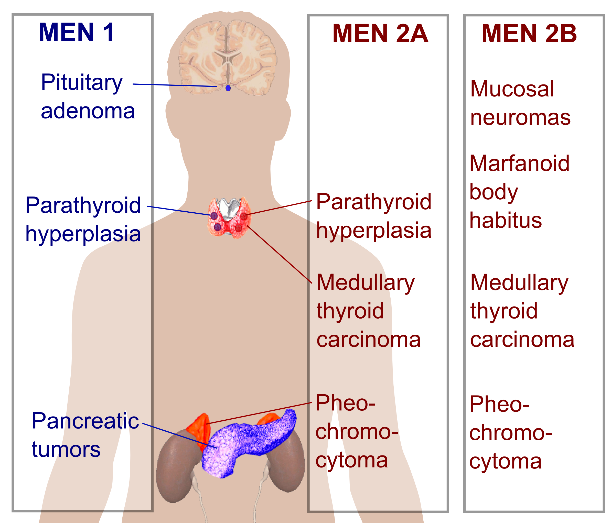

Multiple Endocrine Neoplasia Type 2

CAUSES
MEN2 is a genetic condition. This means that the cancer risk and other features of MEN2 can be passed from generation to generation in a family. The gene associated with MEN2 is called RET. A mutation (alteration) in the RET gene gives a person an increased risk of developing medullary thyroid cancer and other tumors associated with MEN2.
DIAGNOSIS
MEN2A is suspected when there are at least 2 of the 3 common tumors, such as medullary thyroid cancer, pheochromocytoma, or parathyroid adenoma, in 1 person or a close relative. Close relatives are generally considered to be parents, siblings, and children. Medullary thyroid carcinoma has been reported in children as young as 2 years of age, although it more commonly develops between the ages of 5 and 18 years.
MEN2B is suspected in children with mucosal neuromas, meaning lumps on the tip of the tongue, and typical facial features, such as thickened lips. Medullary thyroid cancer can occur very early in childhood.
TREATMENT
- Surgical resection (removal) of lymph nodes in the neck and upper chest, performed by a surgeon experienced with this technique, can result in cure in 10% to 20% of cases where there is spread to neck lymph nodes. Learn more about treatment options for thyroid cancer.
-
Recent studies of drugs that target the RET gene have shown promise for the treatment of medullary thyroid cancer that has spread to the lymph nodes, liver, lung or other places in the body. Two of these compounds, vandetanib and cabozantinib, are available as a treatment option for people with progressive, metastatic medullary thyroid cancer. The risks and benefits of additional surgery should be discussed with a surgeon or endocrinologist experienced with this disease. Other promising therapies are available through participation in a clinical trial, which is a research study. To find clinical trials specific to your diagnosis, talk with your health care team or search online clinical trial databases now.